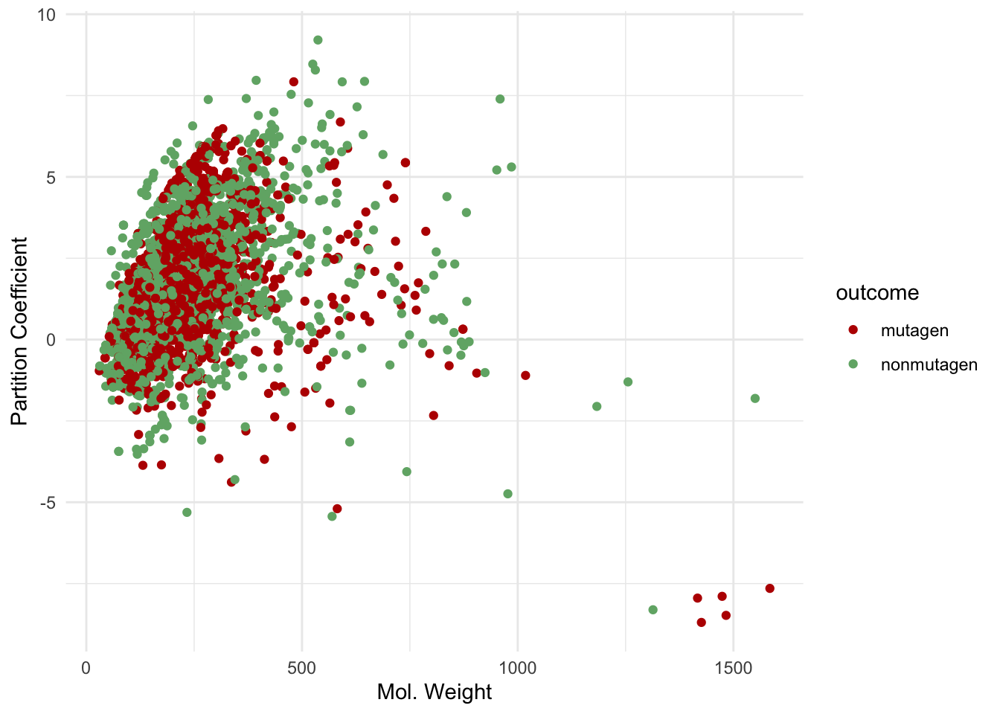
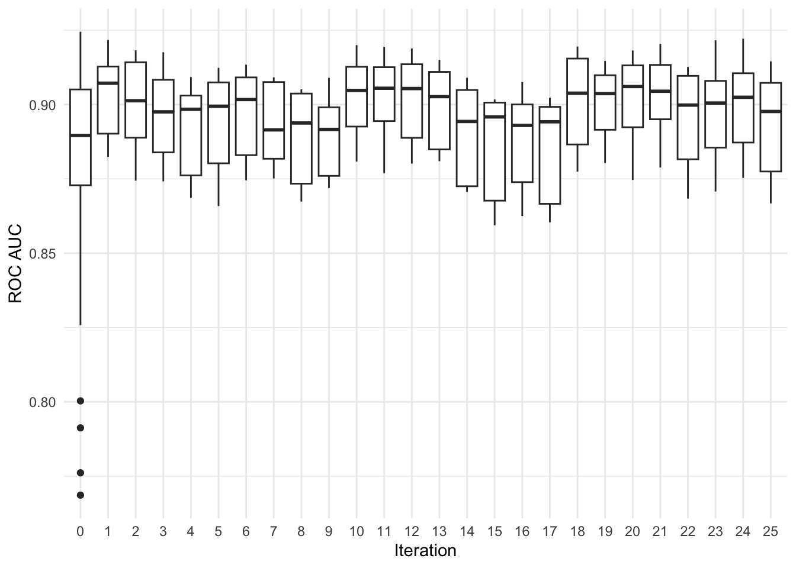
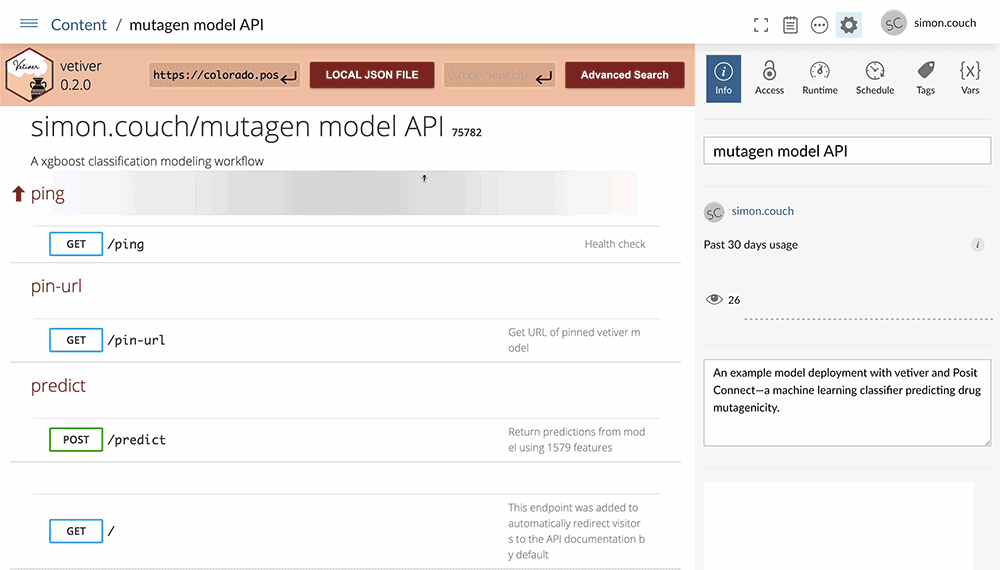

# A tibble: 4,335 × 1,580
outcome MW AMW Sv Se Sp Ss Mv Me Mp Ms nAT
<fct> <dbl> <dbl> <dbl> <dbl> <dbl> <dbl> <dbl> <dbl> <dbl> <dbl> <int>
1 mutagen 326. 7.59 29.3 42.6 30.6 50.7 0.68 0.99 0.71 2.03 43
2 mutagen 174. 9.17 13.2 19.6 13.4 38 0.7 1.03 0.71 2.92 19
3 nonmutagen 300. 9.39 20.0 33.6 21.0 61.2 0.63 1.05 0.66 3.06 32
4 nonmutagen 143. 6.23 12.6 23.1 13.5 26.2 0.55 1 0.59 2.62 23
5 nonmutagen 216. 18.0 10.6 13.0 11.7 27.1 0.88 1.08 0.98 2.71 12
6 mutagen 190. 7.93 15.4 24.4 16.0 36 0.64 1.02 0.67 2.57 24
7 mutagen 328. 12.6 18.8 27.1 20.0 49.4 0.72 1.04 0.77 2.75 26
8 nonmutagen 324. 8.11 26.3 40.7 27.4 59.2 0.66 1.02 0.68 2.47 40
9 mutagen 136. 7.56 11.3 18.2 11.8 25.7 0.63 1.01 0.65 2.57 18
10 mutagen 323. 7.89 26.8 41.5 27.9 54.9 0.65 1.01 0.68 2.29 41
# ℹ 4,325 more rows
# ℹ 1,568 more variables: nSK <int>, nBT <int>, nBO <int>, nBM <int>,
# SCBO <dbl>, ARR <dbl>, nCIC <int>, nCIR <int>, RBN <int>, RBF <dbl>,
# nDB <int>, nTB <int>, nAB <int>, nH <int>, nC <int>, nN <int>, nO <int>,
# nP <int>, nS <int>, nF <int>, nCL <int>, nBR <int>, nI <int>, nX <int>,
# nR03 <int>, nR04 <int>, nR05 <int>, nR06 <int>, nR07 <int>, nR08 <int>,
# nR09 <int>, nR10 <int>, nR11 <int>, nR12 <int>, nBnz <int>, ZM1 <int>, …Pharmaceutical machine learning with tidymodels and Posit Connect
A group of scientists investigate whether they can use drug information to predict if a proposed drug could be a mutagen (i.e. toxicity caused by damage to DNA). Deploying a tidymodels machine learning model with Posit Connect, these scientists can rapidly assess new drugs for their potential harm to patients.
In pharmaceutical research, mutagenicity refers to a drug’s tendency to increase the rate of mutations due to the damage of genetic material, a key indicator that a drug may be a carcinogen. Mutagenicity can be evaluated using a lab test, though the test requires experienced scientists and time in the lab. A group of scientists are studying whether, instead, they can use known information to quickly predict the mutagenicity of new drugs.
The open-source tidymodels packages for machine learning empower these scientists to quickly propose, train, and evaluate a diversity of statistical approaches to predict mutagenicity. Based on their findings, the most performant machine learning model can then be integrated into a plumber API using Posit Connect, allowing scientists across the organization to quickly input drug information and evaluate the potential for drugs to harm patients.
This post will outline the steps to develop and deploy a machine learning model to predict drug mutagenicity. All of the source code for this process is available at https://github.com/simonpcouch/mutagen.
Training Data
The training data consists of 4335 rows and 1580 columns, where the first column gives the outcome of the lab test for a given proposed drug, and the remaining columns give known information about the chemical structure of the drug. This information about the chemical structure can be obtained much more quickly and cheaply than the outcome—in the future, scientists want to be able to predict whether a drug is a mutagen based only on the drug information.
No particular predictor will allow us to straightforwardly predict whether a drug may be a mutagen. We can plot two commonly used predictors against the outcome to demonstrate:

However, using machine learning, we may be able find patterns hidden among all of this data to predict whether a drug is a mutagen or not.
Developing The Model
The tidymodels packages provide a consistent interface to hundreds of machine learning models available across the R ecosystem. This consistency allows us to quickly try out a diversity of statistical approaches, relying on tidymodels to protect us from common modeling pitfalls and provide rigorous estimates of model performance.
First, we try out a number of different machine learning techniques to model the mutagenicity of these drugs and judge their effectiveness using a metric called the area under the ROC curve:

Based on the above plot, we see that a boosted tree model fitted with XGBoost consistently outperforms other models we evaluate, with out-of-sample ROC scores above 0.85 (a value of 1.0 is best). We will thus use these initial results to optimize our XGBoost model further with an approach called simulated annealing:

Simulated annealing performs an iterative search, using results from previous iterations to inform later optimizations. In this search, we see that optimizations made in early iterations resulted in higher ROC scores. The search then proposed optimizations that resulted in less performant models before discovering more performant optimizations later on, giving a maximum out-of-sample ROC score of 0.903. Fitting the best model to the full training set, we see a final test set ROC score of 0.912, indicating that our model generalizes well to data it hasn’t yet seen.
Model Deployment
With our final model fitted and benchmarked, it’s time to put this model into practice. Using vetiver, a multilingual MLOps framework, we can quickly develop a plumber API to provide a user-friendly interface to the fitted model. We then host the app on Posit Connect, providing a safe and performant server to provide model predictions to practitioners within our organization.

The vetiver plumber API provides documentation and templates for generating predictions from the deployed model. Hosting the API on Posit Connect allows us to easily edit the model’s metadata and documentation, securely manage permissions among our organization, and monitor the model’s usage.
All of the source code for data pre-processing, model training, and deployment to Posit Connect with vetiver is publicly available at https://github.com/simonpcouch/mutagen.